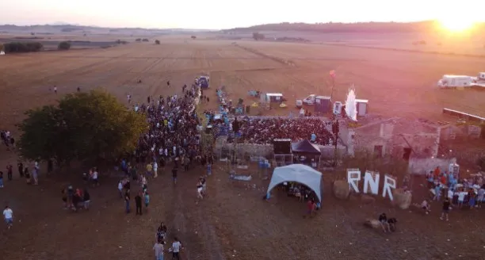

Contacte general
Per dubtes i informació sobre el festival, escriu-nos i et respondrem ben aviat.
rocknrostoll@gmail.com
Contacte
Som un festival autogestionat per joves de Maria de la Salut. Si vols col·laborar, participar o simplement saludar, ens trobaràs a continuació.
Per dubtes i informació sobre el festival, escriu-nos i et respondrem ben aviat.
rocknrostoll@gmail.com
Estam oberts a col·laboracions amb artistes, entitats i mitjans que comparteixen la nostra filosofia: música, joventut i cultura local.
Explica'ns la teva proposta i mirarem de sumar esforços.
Si tens un projecte musical i vols actuar al Rock’n’Rostoll, envia'ns la teva informació i necessitats tècniques.
Troba'ns a les xarxes o escriu-nos directament per col·laborar o resoldre qualsevol dubte.
